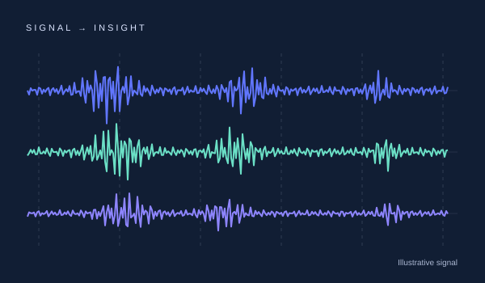
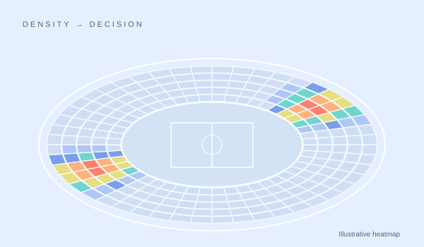
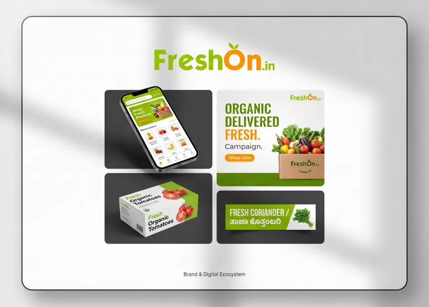

2025–2026
Data Analyst Intern
Redback Operations
Sensor analytics & crowd-monitoring visualisation.
I'm Chiru, a data analyst with a design eye.
Python, SQL and machine learning — from raw signals to decisions people can use.
Melbourne, Australia · Open to analyst & BI roles

Three ways I turn complexity into something useful.

01 / Data & machine learning
Raw EMG signals turned into repeatable muscle-activation insight.
Read case study
02 / Data visualisation
A heatmap service that makes venue congestion easy to spot.
Read case study
03 / Product & visual design
One visual identity across digital, packaging and bilingual retail labels.
Read case studyAnalytical thinking. A designer's eye. A habit of making things.
Get the full résumé2025–2026
Redback Operations
Sensor analytics & crowd-monitoring visualisation.
2023
FreshOn.in
Brand systems, digital campaigns & retail design.
2024–2026
Deakin University
Distinction average.
Open to data analyst, BI and operations opportunities.